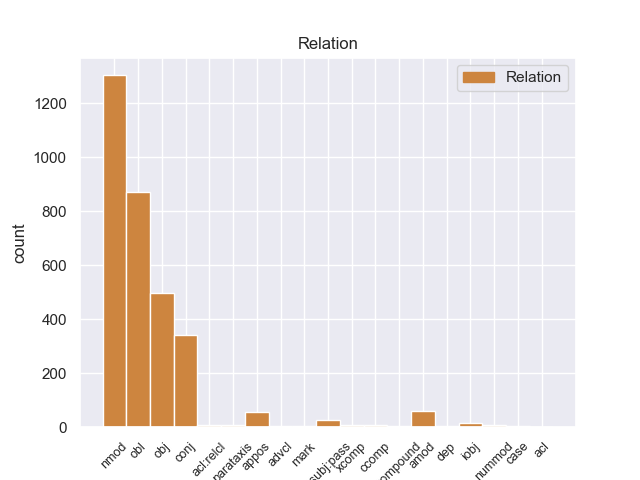
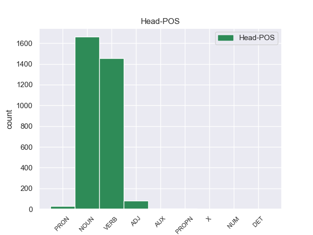

Distribution of features within this leaf



Agreement Rules sorted by frequency.
- When the dependent token is the nominal modifier(nmod) of the head token, and the dependent token is NOUN.
1 Μια _ _ _ _ 0 _ _ _
2 δημόσια _ _ _ _ 0 _ _ _
3 σύμβαση _ _ _ _ 0 _ _ _
4 δεν _ _ _ _ 0 _ _ _
5 μπορεί _ _ _ _ 0 _ _ _
6 να _ _ _ _ 0 _ _ _
7 περιλαμβάνει _ _ _ _ 0 _ _ _
8 την _ _ _ _ 0 _ _ _
9 απαίτηση _ _ _ _ 0 _ _ _
10 από _ _ _ _ 0 _ _ _
11 τους _ _ _ _ 0 _ _ _
12 κατασκευαστές κατασκευαστέ NOUN _ Gender=Masc|Number=Plur 0 _ _ _
13 λεωφορείων λεωφορείω NOUN _ Gender=Masc|Number=Plur 12 nmod _ _
14 να _ _ _ _ 0 _ _ _
15 κάνουν _ _ _ _ 0 _ _ _
16 περιβαλλοντική _ _ _ _ 0 _ _ _
17 εκτίμηση _ _ _ _ 0 _ _ _
18 για _ _ _ _ 0 _ _ _
19 το _ _ _ _ 0 _ _ _
20 Ελσίνκι _ _ _ _ 0 _ _ _
21 πριν _ _ _ _ 0 _ _ _
22 να _ _ _ _ 0 _ _ _
23 υποβάλλουν _ _ _ _ 0 _ _ _
24 τη _ _ _ _ 0 _ _ _
25 σύμβαση _ _ _ _ 0 _ _ _
26 . _ _ _ _ 0 _ _ _
1 Ως _ _ _ _ 0 _ _ _
2 τέτοιο _ _ _ _ 0 _ _ _
3 είχε _ _ _ _ 0 _ _ _
4 σχεδιασθεί σχεδιασθr VERB _ Gender=Masc|Number=Sing|Tense=Past|VerbForm=Part 0 _ _ _
5 σ _ _ _ _ 0 _ _ _
6 την _ _ _ _ 0 _ _ _
7 αρχή αρχή NOUN _ Gender=Fem|Number=Sing 4 obl _ _
8 . _ _ _ _ 0 _ _ _
1 Μια _ _ _ _ 0 _ _ _
2 δημόσια _ _ _ _ 0 _ _ _
3 σύμβαση _ _ _ _ 0 _ _ _
4 δεν _ _ _ _ 0 _ _ _
5 μπορεί _ _ _ _ 0 _ _ _
6 να _ _ _ _ 0 _ _ _
7 περιλαμβάνει περιλαμβάνειr VERB _ Mood=Ind|Number=Sing|Person=3|Tense=Pres|VerbForm=Fin 0 _ _ _
8 την _ _ _ _ 0 _ _ _
9 απαίτηση απαίτηση NOUN _ Gender=Fem|Number=Sing 7 obj _ _
10 από _ _ _ _ 0 _ _ _
11 τους _ _ _ _ 0 _ _ _
12 κατασκευαστές _ _ _ _ 0 _ _ _
13 λεωφορείων _ _ _ _ 0 _ _ _
14 να _ _ _ _ 0 _ _ _
15 κάνουν _ _ _ _ 0 _ _ _
16 περιβαλλοντική _ _ _ _ 0 _ _ _
17 εκτίμηση _ _ _ _ 0 _ _ _
18 για _ _ _ _ 0 _ _ _
19 το _ _ _ _ 0 _ _ _
20 Ελσίνκι _ _ _ _ 0 _ _ _
21 πριν _ _ _ _ 0 _ _ _
22 να _ _ _ _ 0 _ _ _
23 υποβάλλουν _ _ _ _ 0 _ _ _
24 τη _ _ _ _ 0 _ _ _
25 σύμβαση _ _ _ _ 0 _ _ _
26 . _ _ _ _ 0 _ _ _
1 Η _ _ _ _ 0 _ _ _
2 εταιρεία _ _ _ _ 0 _ _ _
3 αυτή _ _ _ _ 0 _ _ _
4 σ _ _ _ _ 0 _ _ _
5 τη _ _ _ _ 0 _ _ _
6 Black _ _ _ _ 0 _ _ _
7 Country _ _ _ _ 0 _ _ _
8 σ _ _ _ _ 0 _ _ _
9 το _ _ _ _ 0 _ _ _
10 Ηνωμένο _ _ _ _ 0 _ _ _
11 Βασίλειο _ _ _ _ 0 _ _ _
12 απασχολεί _ _ _ _ 0 _ _ _
13 80 _ _ _ _ 0 _ _ _
14 άτομα άτομ NOUN _ Gender=Fem|Number=Plur 0 _ _ _
15 , _ _ _ _ 0 _ _ _
16 δηλαδή _ _ _ _ 0 _ _ _
17 80 _ _ _ _ 0 _ _ _
18 θέσεις θέσει NOUN _ Gender=Masc|Number=Plur 14 conj _ _
19 εργασίες _ _ _ _ 0 _ _ _
20 για _ _ _ _ 0 _ _ _
21 τις _ _ _ _ 0 _ _ _
22 οποίες _ _ _ _ 0 _ _ _
23 υπάρχει _ _ _ _ 0 _ _ _
24 μεγάλη _ _ _ _ 0 _ _ _
25 ανάγκη _ _ _ _ 0 _ _ _
26 , _ _ _ _ 0 _ _ _
27 και _ _ _ _ 0 _ _ _
28 συμμορφώνεται _ _ _ _ 0 _ _ _
29 με _ _ _ _ 0 _ _ _
30 όλες _ _ _ _ 0 _ _ _
31 τις _ _ _ _ 0 _ _ _
32 κοινωνικές _ _ _ _ 0 _ _ _
33 προδιαγραφές _ _ _ _ 0 _ _ _
34 της _ _ _ _ 0 _ _ _
35 νομοθεσίας _ _ _ _ 0 _ _ _
36 του _ _ _ _ 0 _ _ _
37 Ηνωμένου _ _ _ _ 0 _ _ _
38 Βασιλείου _ _ _ _ 0 _ _ _
39 . _ _ _ _ 0 _ _ _
1 Η _ _ _ _ 0 _ _ _
2 εταιρεία _ _ _ _ 0 _ _ _
3 αυτή _ _ _ _ 0 _ _ _
4 σ _ _ _ _ 0 _ _ _
5 τη _ _ _ _ 0 _ _ _
6 Black _ _ _ _ 0 _ _ _
7 Country _ _ _ _ 0 _ _ _
8 σ _ _ _ _ 0 _ _ _
9 το _ _ _ _ 0 _ _ _
10 Ηνωμένο _ _ _ _ 0 _ _ _
11 Βασίλειο _ _ _ _ 0 _ _ _
12 απασχολεί _ _ _ _ 0 _ _ _
13 80 _ _ _ _ 0 _ _ _
14 άτομα _ _ _ _ 0 _ _ _
15 , _ _ _ _ 0 _ _ _
16 δηλαδή _ _ _ _ 0 _ _ _
17 80 _ _ _ _ 0 _ _ _
18 θέσεις θέσει NOUN _ Gender=Masc|Number=Plur 0 _ _ _
19 εργασίες εργασίε NOUN _ Number=Plur 18 amod _ _
20 για _ _ _ _ 0 _ _ _
21 τις _ _ _ _ 0 _ _ _
22 οποίες _ _ _ _ 0 _ _ _
23 υπάρχει _ _ _ _ 0 _ _ _
24 μεγάλη _ _ _ _ 0 _ _ _
25 ανάγκη _ _ _ _ 0 _ _ _
26 , _ _ _ _ 0 _ _ _
27 και _ _ _ _ 0 _ _ _
28 συμμορφώνεται _ _ _ _ 0 _ _ _
29 με _ _ _ _ 0 _ _ _
30 όλες _ _ _ _ 0 _ _ _
31 τις _ _ _ _ 0 _ _ _
32 κοινωνικές _ _ _ _ 0 _ _ _
33 προδιαγραφές _ _ _ _ 0 _ _ _
34 της _ _ _ _ 0 _ _ _
35 νομοθεσίας _ _ _ _ 0 _ _ _
36 του _ _ _ _ 0 _ _ _
37 Ηνωμένου _ _ _ _ 0 _ _ _
38 Βασιλείου _ _ _ _ 0 _ _ _
39 . _ _ _ _ 0 _ _ _
1 Σε _ _ _ _ 0 _ _ _
2 ορισμένα _ _ _ _ 0 _ _ _
3 όμως _ _ _ _ 0 _ _ _
4 σημεία _ _ _ _ 0 _ _ _
5 η _ _ _ _ 0 _ _ _
6 αρμόδια _ _ _ _ 0 _ _ _
7 επιτροπή _ _ _ _ 0 _ _ _
8 κατέληξε _ _ _ _ 0 _ _ _
9 σε _ _ _ _ 0 _ _ _
10 περίεργα _ _ _ _ 0 _ _ _
11 αποτελέσματα _ _ _ _ 0 _ _ _
12 , _ _ _ _ 0 _ _ _
13 κυρίως _ _ _ _ 0 _ _ _
14 όσον _ _ _ _ 0 _ _ _
15 αφορά _ _ _ _ 0 _ _ _
16 την _ _ _ _ 0 _ _ _
17 πρόταση _ _ _ _ 0 _ _ _
18 οδηγίας _ _ _ _ 0 _ _ _
19 για _ _ _ _ 0 _ _ _
20 τις _ _ _ _ 0 _ _ _
21 δημόσιες _ _ _ _ 0 _ _ _
22 συμβάσεις _ _ _ _ 0 _ _ _
23 για _ _ _ _ 0 _ _ _
24 αγαθά _ _ _ _ 0 _ _ _
25 , _ _ _ _ 0 _ _ _
26 υπηρεσίες _ _ _ _ 0 _ _ _
27 και _ _ _ _ 0 _ _ _
28 για _ _ _ _ 0 _ _ _
29 την _ _ _ _ 0 _ _ _
30 ανάθεση _ _ _ _ 0 _ _ _
31 κατασκευαστικών _ _ _ _ 0 _ _ _
32 συμβάσεων _ _ _ _ 0 _ _ _
33 , _ _ _ _ 0 _ _ _
34 το _ _ _ _ 0 _ _ _
35 άρθρο _ _ _ _ 0 _ _ _
36 53 _ _ _ _ 0 _ _ _
37 της _ _ _ _ 0 _ _ _
38 οποίας _ _ _ _ 0 _ _ _
39 θα _ _ _ _ 0 _ _ _
40 πρέπει _ _ _ _ 0 _ _ _
41 να _ _ _ _ 0 _ _ _
42 τροποποιηθεί _ _ _ _ 0 _ _ _
43 , _ _ _ _ 0 _ _ _
44 έτσι _ _ _ _ 0 _ _ _
45 ώστε _ _ _ _ 0 _ _ _
46 να _ _ _ _ 0 _ _ _
47 καταστεί _ _ _ _ 0 _ _ _
48 σημαντικά _ _ _ _ 0 _ _ _
49 ευκολότερο _ _ _ _ 0 _ _ _
50 να _ _ _ _ 0 _ _ _
51 λαμβάνεται _ _ _ _ 0 _ _ _
52 υπόψη _ _ _ _ 0 _ _ _
53 το _ _ _ _ 0 _ _ _
54 περιβάλλον _ _ _ _ 0 _ _ _
55 σ _ _ _ _ 0 _ _ _
56 το _ _ _ _ 0 _ _ _
57 πλαίσιο _ _ _ _ 0 _ _ _
58 των _ _ _ _ 0 _ _ _
59 δημοσίων _ _ _ _ 0 _ _ _
60 συμβάσεων _ _ _ _ 0 _ _ _
61 , _ _ _ _ 0 _ _ _
62 ενώ _ _ _ _ 0 _ _ _
63 σ _ _ _ _ 0 _ _ _
64 τη _ _ _ _ 0 _ _ _
65 δεύτερη _ _ _ _ 0 _ _ _
66 οδηγία _ _ _ _ 0 _ _ _
67 , _ _ _ _ 0 _ _ _
68 δηλαδή _ _ _ _ 0 _ _ _
69 σ _ _ _ _ 0 _ _ _
70 την _ _ _ _ 0 _ _ _
71 πρόταση πρόταση NOUN _ Gender=Fem|Number=Sing 0 _ _ _
72 οδηγίας οδηγίας NOUN _ Gender=Fem|Number=Sing 71 appos _ _
73 για _ _ _ _ 0 _ _ _
74 τις _ _ _ _ 0 _ _ _
75 δημόσιες _ _ _ _ 0 _ _ _
76 συμβάσεις _ _ _ _ 0 _ _ _
77 σ _ _ _ _ 0 _ _ _
78 τον _ _ _ _ 0 _ _ _
79 τομέα _ _ _ _ 0 _ _ _
80 των _ _ _ _ 0 _ _ _
81 υδάτων _ _ _ _ 0 _ _ _
82 , _ _ _ _ 0 _ _ _
83 της _ _ _ _ 0 _ _ _
84 ενέργειας _ _ _ _ 0 _ _ _
85 και _ _ _ _ 0 _ _ _
86 των _ _ _ _ 0 _ _ _
87 μεταφορών _ _ _ _ 0 _ _ _
88 , _ _ _ _ 0 _ _ _
89 δεν _ _ _ _ 0 _ _ _
90 πραγματοποιείται _ _ _ _ 0 _ _ _
91 η _ _ _ _ 0 _ _ _
92 ίδια _ _ _ _ 0 _ _ _
93 τροποποίηση _ _ _ _ 0 _ _ _
94 του _ _ _ _ 0 _ _ _
95 άρθρου _ _ _ _ 0 _ _ _
96 54 _ _ _ _ 0 _ _ _
97 , _ _ _ _ 0 _ _ _
98 το _ _ _ _ 0 _ _ _
99 οποίο _ _ _ _ 0 _ _ _
100 είναι _ _ _ _ 0 _ _ _
101 ταυτόσημο _ _ _ _ 0 _ _ _
102 με _ _ _ _ 0 _ _ _
103 το _ _ _ _ 0 _ _ _
104 άρθρο _ _ _ _ 0 _ _ _
105 53 _ _ _ _ 0 _ _ _
106 της _ _ _ _ 0 _ _ _
107 πρώτης _ _ _ _ 0 _ _ _
108 οδηγίας _ _ _ _ 0 _ _ _
109 . _ _ _ _ 0 _ _ _
1 Su _ _ _ _ 0 _ _ _
2 inauguración inauguración NOUN _ Gender=Fem|Number=Sing 4 nsubj:pass _ _
3 está _ _ _ _ 0 _ _ _
4 prevista previsto VERB _ Gender=Fem|Number=Sing|VerbForm=Part 0 _ _ _
5 durante _ _ _ _ 0 _ _ _
6 el _ _ _ _ 0 _ _ _
7 año _ _ _ _ 0 _ _ _
8 2011 _ _ _ _ 0 _ _ _
9 . _ _ _ _ 0 _ _ _
1 Επίσης _ _ _ _ 0 _ _ _
2 η _ _ _ _ 0 _ _ _
3 Δυτικοαφρικανική _ _ _ _ 0 _ _ _
4 Ένωση _ _ _ _ 0 _ _ _
5 στέλνει _ _ _ _ 0 _ _ _
6 άλλους _ _ _ _ 0 _ _ _
7 δύο _ _ _ _ 0 _ _ _
8 χιλιάδες χιλιάδες NOUN _ Gender=Masc|Number=Plur 9 nummod _ _
9 στρατιώτες στρατιώτε NOUN _ Gender=Masc|Number=Plur 0 _ _ _
10 , _ _ _ _ 0 _ _ _
11 σ _ _ _ _ 0 _ _ _
12 το _ _ _ _ 0 _ _ _
13 πλαίσιο _ _ _ _ 0 _ _ _
14 δύναμης _ _ _ _ 0 _ _ _
15 που _ _ _ _ 0 _ _ _
16 έχει _ _ _ _ 0 _ _ _
17 εξουσιοδοτηθεί _ _ _ _ 0 _ _ _
18 από _ _ _ _ 0 _ _ _
19 τα _ _ _ _ 0 _ _ _
20 Ηνωμένα _ _ _ _ 0 _ _ _
21 Έθνη _ _ _ _ 0 _ _ _
22 . _ _ _ _ 0 _ _ _
1 Carrington _ _ _ _ 0 _ _ _
2 ordenó _ _ _ _ 0 _ _ _
3 un _ _ _ _ 0 _ _ _
4 grupo _ _ _ _ 0 _ _ _
5 de _ _ _ _ 0 _ _ _
6 socorro _ _ _ _ 0 _ _ _
7 , _ _ _ _ 0 _ _ _
8 compuesto _ _ _ _ 0 _ _ _
9 de _ _ _ _ 0 _ _ _
10 49 _ _ _ _ 0 _ _ _
11 soldados _ _ _ _ 0 _ _ _
12 de _ _ _ _ 0 _ _ _
13 infantería _ _ _ _ 0 _ _ _
14 de _ _ _ _ 0 _ _ _
15 la _ _ _ _ 0 _ _ _
16 Infantería _ _ _ _ 0 _ _ _
17 18 _ _ _ _ 0 _ _ _
18 , _ _ _ _ 0 _ _ _
19 27 _ _ _ _ 0 _ _ _
20 soldados _ _ _ _ 0 _ _ _
21 montados _ _ _ _ 0 _ _ _
22 de _ _ _ _ 0 _ _ _
23 la _ _ _ _ 0 _ _ _
24 caballería _ _ _ _ 0 _ _ _
25 de _ _ _ _ 0 _ _ _
26 segundo _ _ _ _ 0 _ _ _
27 y _ _ _ _ 0 _ _ _
28 le _ _ _ _ 0 _ _ _
29 ordenó ordenar VERB _ Mood=Ind|Number=Sing|Person=3|Tense=Past|VerbForm=Fin 0 _ _ _
30 a _ _ _ _ 0 _ _ _
31 el _ _ _ _ 0 _ _ _
32 capitán capitán NOUN _ Gender=Masc|Number=Sing 29 iobj _ _
33 James _ _ _ _ 0 _ _ _
34 Powell _ _ _ _ 0 _ _ _
35 a _ _ _ _ 0 _ _ _
36 comandar _ _ _ _ 0 _ _ _
37 . _ _ _ _ 0 _ _ _
1 Τόνισε _ _ _ _ 0 _ _ _
2 μάλιστα _ _ _ _ 0 _ _ _
3 , _ _ _ _ 0 _ _ _
4 όπως _ _ _ _ 0 _ _ _
5 και _ _ _ _ 0 _ _ _
6 άλλοι _ _ _ _ 0 _ _ _
7 ομιλητές _ _ _ _ 0 _ _ _
8 , _ _ _ _ 0 _ _ _
9 ότι _ _ _ _ 0 _ _ _
10 " _ _ _ _ 0 _ _ _
11 η _ _ _ _ 0 _ _ _
12 Ευρώπη _ _ _ _ 0 _ _ _
13 πρέπει _ _ _ _ 0 _ _ _
14 δραστικά _ _ _ _ 0 _ _ _
15 να _ _ _ _ 0 _ _ _
16 επανεξετάσει _ _ _ _ 0 _ _ _
17 τις _ _ _ _ 0 _ _ _
18 δικές _ _ _ _ 0 _ _ _
19 της _ _ _ _ 0 _ _ _
20 ευθύνες _ _ _ _ 0 _ _ _
21 και _ _ _ _ 0 _ _ _
22 να _ _ _ _ 0 _ _ _
23 μοιραστεί _ _ _ _ 0 _ _ _
24 το _ _ _ _ 0 _ _ _
25 ευρωπαϊκό _ _ _ _ 0 _ _ _
26 αυτό _ _ _ _ 0 _ _ _
27 πρόβλημα _ _ _ _ 0 _ _ _
28 και _ _ _ _ 0 _ _ _
29 όχι _ _ _ _ 0 _ _ _
30 να _ _ _ _ 0 _ _ _
31 διατηρεί _ _ _ _ 0 _ _ _
32 την _ _ _ _ 0 _ _ _
33 άποψη άποψη NOUN _ Gender=Fem|Number=Sing 0 _ _ _
34 ότι _ _ _ _ 0 _ _ _
35 αυτό _ _ _ _ 0 _ _ _
36 είναι _ _ _ _ 0 _ _ _
37 πρόβλημα πρόβλημα NOUN _ Gender=Masc|Number=Sing 33 acl:relcl _ _
38 λίγων _ _ _ _ 0 _ _ _
39 χωρών _ _ _ _ 0 _ _ _
40 και _ _ _ _ 0 _ _ _
41 κυρίως _ _ _ _ 0 _ _ _
42 της _ _ _ _ 0 _ _ _
43 Ελλάδας _ _ _ _ 0 _ _ _
44 " _ _ _ _ 0 _ _ _
45 . _ _ _ _ 0 _ _ _
1 Εν _ _ _ _ 0 _ _ _
2 πάση _ _ _ _ 0 _ _ _
3 περιπτώσει _ _ _ _ 0 _ _ _
4 , _ _ _ _ 0 _ _ _
5 κύριε _ _ _ _ 0 _ _ _
6 Πρόεδρε _ _ _ _ 0 _ _ _
7 , _ _ _ _ 0 _ _ _
8 προσωπικά _ _ _ _ 0 _ _ _
9 πιστεύω πιστεύωr VERB _ Mood=Ind|Number=Plur|Person=3|Tense=Pres|VerbForm=Fin 0 _ _ _
10 ότι _ _ _ _ 0 _ _ _
11 μία _ _ _ _ 0 _ _ _
12 μεγάλη _ _ _ _ 0 _ _ _
13 πλειοψηφία _ _ _ _ 0 _ _ _
14 του _ _ _ _ 0 _ _ _
15 Σώματος _ _ _ _ 0 _ _ _
16 είναι _ _ _ _ 0 _ _ _
17 υπέρ υπέρ NOUN _ Number=Plur 9 ccomp _ _
18 μιας _ _ _ _ 0 _ _ _
19 συνταγματοποίησης _ _ _ _ 0 _ _ _
20 της _ _ _ _ 0 _ _ _
21 διαδικασίας _ _ _ _ 0 _ _ _
22 , _ _ _ _ 0 _ _ _
23 υπέρ _ _ _ _ 0 _ _ _
24 μιας _ _ _ _ 0 _ _ _
25 Ομοσπονδίας _ _ _ _ 0 _ _ _
26 κρατών _ _ _ _ 0 _ _ _
27 και _ _ _ _ 0 _ _ _
28 πολιτών _ _ _ _ 0 _ _ _
29 . _ _ _ _ 0 _ _ _
1 El _ _ _ _ 0 _ _ _
2 interior _ _ _ _ 0 _ _ _
3 gaditano _ _ _ _ 0 _ _ _
4 quiere querer VERB _ Mood=Ind|Number=Sing|Person=3|Tense=Pres|VerbForm=Fin 0 _ _ _
5 ser _ _ _ _ 0 _ _ _
6 la _ _ _ _ 0 _ _ _
7 referencia referencia NOUN _ Gender=Fem|Number=Sing 4 xcomp _ _
8 de _ _ _ _ 0 _ _ _
9 el _ _ _ _ 0 _ _ _
10 nuevo _ _ _ _ 0 _ _ _
11 proyecto _ _ _ _ 0 _ _ _
12 junto _ _ _ _ 0 _ _ _
13 con _ _ _ _ 0 _ _ _
14 otros _ _ _ _ 0 _ _ _
15 nombres _ _ _ _ 0 _ _ _
16 como _ _ _ _ 0 _ _ _
17 el _ _ _ _ 0 _ _ _
18 de _ _ _ _ 0 _ _ _
19 José _ _ _ _ 0 _ _ _
20 Ángel _ _ _ _ 0 _ _ _
21 según _ _ _ _ 0 _ _ _
22 Sur _ _ _ _ 0 _ _ _
23 . _ _ _ _ 0 _ _ _
1 El _ _ _ _ 0 _ _ _
2 ion _ _ _ _ 0 _ _ _
3 ferrosos _ _ _ _ 0 _ _ _
4 es _ _ _ _ 0 _ _ _
5 mucho _ _ _ _ 0 _ _ _
6 más _ _ _ _ 0 _ _ _
7 soluble _ _ _ _ 0 _ _ _
8 que _ _ _ _ 0 _ _ _
9 el _ _ _ _ 0 _ _ _
10 férrico _ _ _ _ 0 _ _ _
11 , _ _ _ _ 0 _ _ _
12 con _ _ _ _ 0 _ _ _
13 lo _ _ _ _ 0 _ _ _
14 cual _ _ _ _ 0 _ _ _
15 el _ _ _ _ 0 _ _ _
16 hierro _ _ _ _ 0 _ _ _
17 se _ _ _ _ 0 _ _ _
18 moviliza movilizar VERB _ Mood=Ind|Number=Sing|Person=3|Tense=Pres|VerbForm=Fin 0 _ _ _
19 , _ _ _ _ 0 _ _ _
20 siendo _ _ _ _ 0 _ _ _
21 este _ _ _ _ 0 _ _ _
22 un _ _ _ _ 0 _ _ _
23 primer _ _ _ _ 0 _ _ _
24 paso paso NOUN _ Gender=Masc|Number=Sing 18 advcl _ _
25 importante _ _ _ _ 0 _ _ _
26 en _ _ _ _ 0 _ _ _
27 la _ _ _ _ 0 _ _ _
28 formación _ _ _ _ 0 _ _ _
29 de _ _ _ _ 0 _ _ _
30 un _ _ _ _ 0 _ _ _
31 tipo _ _ _ _ 0 _ _ _
32 de _ _ _ _ 0 _ _ _
33 depósito _ _ _ _ 0 _ _ _
34 mineral _ _ _ _ 0 _ _ _
35 llamado _ _ _ _ 0 _ _ _
36 hierro _ _ _ _ 0 _ _ _
37 de _ _ _ _ 0 _ _ _
38 los _ _ _ _ 0 _ _ _
39 pantanos _ _ _ _ 0 _ _ _
40 . _ _ _ _ 0 _ _ _
1 También _ _ _ _ 0 _ _ _
2 se _ _ _ _ 0 _ _ _
3 le _ _ _ _ 0 _ _ _
4 conoce _ _ _ _ 0 _ _ _
5 como _ _ _ _ 0 _ _ _
6 el _ _ _ _ 0 _ _ _
7 antiguo _ _ _ _ 0 _ _ _
8 Liceo _ _ _ _ 0 _ _ _
9 Antioqueño _ _ _ _ 0 _ _ _
10 el _ _ _ _ 0 _ _ _
11 cual _ _ _ _ 0 _ _ _
12 estaba _ _ _ _ 0 _ _ _
13 adscrito _ _ _ _ 0 _ _ _
14 a _ _ _ _ 0 _ _ _
15 la _ _ _ _ 0 _ _ _
16 Universidad _ _ _ _ 0 _ _ _
17 y _ _ _ _ 0 _ _ _
18 prestaba _ _ _ _ 0 _ _ _
19 los _ _ _ _ 0 _ _ _
20 servicios _ _ _ _ 0 _ _ _
21 educativos _ _ _ _ 0 _ _ _
22 de _ _ _ _ 0 _ _ _
23 bachillerato _ _ _ _ 0 _ _ _
24 , _ _ _ _ 0 _ _ _
25 una _ _ _ _ 0 _ _ _
26 vez vez NOUN _ Gender=Fem|Number=Sing 29 mark _ _
27 éste _ _ _ _ 0 _ _ _
28 es _ _ _ _ 0 _ _ _
29 cerrado cerrado VERB _ Gender=Masc|Number=Sing|VerbForm=Part 0 _ _ _
30 en _ _ _ _ 0 _ _ _
31 1988 _ _ _ _ 0 _ _ _
32 , _ _ _ _ 0 _ _ _
33 pasa _ _ _ _ 0 _ _ _
34 a _ _ _ _ 0 _ _ _
35 ser _ _ _ _ 0 _ _ _
36 ocupado _ _ _ _ 0 _ _ _
37 directamente _ _ _ _ 0 _ _ _
38 por _ _ _ _ 0 _ _ _
39 la _ _ _ _ 0 _ _ _
40 Universidad _ _ _ _ 0 _ _ _
41 . _ _ _ _ 0 _ _ _
1 La _ _ _ _ 0 _ _ _
2 construcción _ _ _ _ 0 _ _ _
3 , _ _ _ _ 0 _ _ _
4 de _ _ _ _ 0 _ _ _
5 tres _ _ _ _ 0 _ _ _
6 naves _ _ _ _ 0 _ _ _
7 , _ _ _ _ 0 _ _ _
8 se _ _ _ _ 0 _ _ _
9 levanta _ _ _ _ 0 _ _ _
10 sobre _ _ _ _ 0 _ _ _
11 una _ _ _ _ 0 _ _ _
12 planta _ _ _ _ 0 _ _ _
13 de _ _ _ _ 0 _ _ _
14 tipo tipo NOUN _ Gender=Masc|Number=Sing 0 _ _ _
15 salón salón NOUN _ Gender=Masc|Number=Sing 14 compound _ SpaceAfter=No
16 . _ _ _ _ 0 _ _ _
1 Ως _ _ _ _ 0 _ _ _
2 εκ εκ NOUN _ Gender=Masc|Number=Sing 3 case _ _
3 τούτου τούτου NOUN _ Gender=Masc|Number=Sing 0 _ _ _
4 , _ _ _ _ 0 _ _ _
5 κατά _ _ _ _ 0 _ _ _
6 τη _ _ _ _ 0 _ _ _
7 διάρκεια _ _ _ _ 0 _ _ _
8 της _ _ _ _ 0 _ _ _
9 επίσκεψής _ _ _ _ 0 _ _ _
10 μου _ _ _ _ 0 _ _ _
11 πρότινος _ _ _ _ 0 _ _ _
12 σ _ _ _ _ 0 _ _ _
13 την _ _ _ _ 0 _ _ _
14 Τουρκία _ _ _ _ 0 _ _ _
15 υπογράμμισα _ _ _ _ 0 _ _ _
16 ότι _ _ _ _ 0 _ _ _
17 αναμένουμε _ _ _ _ 0 _ _ _
18 τη _ _ _ _ 0 _ _ _
19 λήψη _ _ _ _ 0 _ _ _
20 ευρύτερων _ _ _ _ 0 _ _ _
21 μέτρων _ _ _ _ 0 _ _ _
22 όσον _ _ _ _ 0 _ _ _
23 αφορά _ _ _ _ 0 _ _ _
24 την _ _ _ _ 0 _ _ _
25 ελευθερία _ _ _ _ 0 _ _ _
26 του _ _ _ _ 0 _ _ _
27 συνασπίζεσθαι _ _ _ _ 0 _ _ _
28 , _ _ _ _ 0 _ _ _
29 τη _ _ _ _ 0 _ _ _
30 χρήση _ _ _ _ 0 _ _ _
31 γλωσσών _ _ _ _ 0 _ _ _
32 σ _ _ _ _ 0 _ _ _
33 τη _ _ _ _ 0 _ _ _
34 ραδιοφωνία _ _ _ _ 0 _ _ _
35 , _ _ _ _ 0 _ _ _
36 την _ _ _ _ 0 _ _ _
37 τηλεόραση _ _ _ _ 0 _ _ _
38 και _ _ _ _ 0 _ _ _
39 την _ _ _ _ 0 _ _ _
40 εκπαίδευση _ _ _ _ 0 _ _ _
41 , _ _ _ _ 0 _ _ _
42 την _ _ _ _ 0 _ _ _
43 κατάργηση _ _ _ _ 0 _ _ _
44 της _ _ _ _ 0 _ _ _
45 θανατικής _ _ _ _ 0 _ _ _
46 ποινής _ _ _ _ 0 _ _ _
47 καθώς _ _ _ _ 0 _ _ _
48 και _ _ _ _ 0 _ _ _
49 την _ _ _ _ 0 _ _ _
50 υιοθέτηση _ _ _ _ 0 _ _ _
51 των _ _ _ _ 0 _ _ _
52 αρχών _ _ _ _ 0 _ _ _
53 της _ _ _ _ 0 _ _ _
54 νομικής _ _ _ _ 0 _ _ _
55 προστασίας _ _ _ _ 0 _ _ _
56 αντίστοιχα _ _ _ _ 0 _ _ _
57 με _ _ _ _ 0 _ _ _
58 τη _ _ _ _ 0 _ _ _
59 νομολογία _ _ _ _ 0 _ _ _
60 του _ _ _ _ 0 _ _ _
61 Ευρωπαϊκού _ _ _ _ 0 _ _ _
62 Δικαστηρίου _ _ _ _ 0 _ _ _
63 για _ _ _ _ 0 _ _ _
64 τα _ _ _ _ 0 _ _ _
65 Ανθρώπινα _ _ _ _ 0 _ _ _
66 Δικαιώματα _ _ _ _ 0 _ _ _
67 . _ _ _ _ 0 _ _ _
1 Meses _ _ _ _ 0 _ _ _
2 más _ _ _ _ 0 _ _ _
3 tarde _ _ _ _ 0 _ _ _
4 , _ _ _ _ 0 _ _ _
5 en _ _ _ _ 0 _ _ _
6 un _ _ _ _ 0 _ _ _
7 momento _ _ _ _ 0 _ _ _
8 en _ _ _ _ 0 _ _ _
9 que _ _ _ _ 0 _ _ _
10 Éxodus _ _ _ _ 0 _ _ _
11 fue _ _ _ _ 0 _ _ _
12 encarcelado _ _ _ _ 0 _ _ _
13 brevemente _ _ _ _ 0 _ _ _
14 , _ _ _ _ 0 _ _ _
15 los _ _ _ _ 0 _ _ _
16 Acólitos _ _ _ _ 0 _ _ _
17 se _ _ _ _ 0 _ _ _
18 dividieron _ _ _ _ 0 _ _ _
19 en _ _ _ _ 0 _ _ _
20 dos _ _ _ _ 0 _ _ _
21 grupos _ _ _ _ 0 _ _ _
22 , _ _ _ _ 0 _ _ _
23 cada _ _ _ _ 0 _ _ _
24 uno uno PRON _ Gender=Masc|Number=Sing|PronType=Ind 0 _ _ _
25 la _ _ _ _ 0 _ _ _
26 búsqueda búsqueda NOUN _ Gender=Fem|Number=Sing 24 dep _ _
27 de _ _ _ _ 0 _ _ _
28 Magneto _ _ _ _ 0 _ _ _
29 . _ _ _ _ 0 _ _ _
1 El _ _ _ _ 0 _ _ _
2 ion _ _ _ _ 0 _ _ _
3 ferrosos _ _ _ _ 0 _ _ _
4 es _ _ _ _ 0 _ _ _
5 mucho _ _ _ _ 0 _ _ _
6 más _ _ _ _ 0 _ _ _
7 soluble _ _ _ _ 0 _ _ _
8 que _ _ _ _ 0 _ _ _
9 el _ _ _ _ 0 _ _ _
10 férrico _ _ _ _ 0 _ _ _
11 , _ _ _ _ 0 _ _ _
12 con _ _ _ _ 0 _ _ _
13 lo _ _ _ _ 0 _ _ _
14 cual _ _ _ _ 0 _ _ _
15 el _ _ _ _ 0 _ _ _
16 hierro _ _ _ _ 0 _ _ _
17 se _ _ _ _ 0 _ _ _
18 moviliza _ _ _ _ 0 _ _ _
19 , _ _ _ _ 0 _ _ _
20 siendo _ _ _ _ 0 _ _ _
21 este _ _ _ _ 0 _ _ _
22 un _ _ _ _ 0 _ _ _
23 primer _ _ _ _ 0 _ _ _
24 paso _ _ _ _ 0 _ _ _
25 importante _ _ _ _ 0 _ _ _
26 en _ _ _ _ 0 _ _ _
27 la _ _ _ _ 0 _ _ _
28 formación _ _ _ _ 0 _ _ _
29 de _ _ _ _ 0 _ _ _
30 un _ _ _ _ 0 _ _ _
31 tipo _ _ _ _ 0 _ _ _
32 de _ _ _ _ 0 _ _ _
33 depósito depósito NOUN _ Gender=Masc|Number=Sing 0 _ _ _
34 mineral _ _ _ _ 0 _ _ _
35 llamado _ _ _ _ 0 _ _ _
36 hierro hierro NOUN _ Gender=Masc|Number=Sing 33 acl _ _
37 de _ _ _ _ 0 _ _ _
38 los _ _ _ _ 0 _ _ _
39 pantanos _ _ _ _ 0 _ _ _
40 . _ _ _ _ 0 _ _ _
Disagree Examples:
1 Una uno PRON _ Gender=Fem|Number=Sing|PronType=Ind 0 _ _ _
2 de _ _ _ _ 0 _ _ _
3 las _ _ _ _ 0 _ _ _
4 primeras _ _ _ _ 0 _ _ _
5 jugadas jugada NOUN _ Gender=Fem|Number=Plur 1 nmod _ _
6 de _ _ _ _ 0 _ _ _
7 el _ _ _ _ 0 _ _ _
8 partido _ _ _ _ 0 _ _ _
9 estuvo _ _ _ _ 0 _ _ _
10 en _ _ _ _ 0 _ _ _
11 los _ _ _ _ 0 _ _ _
12 pies _ _ _ _ 0 _ _ _
13 de _ _ _ _ 0 _ _ _
14 Aguero _ _ _ _ 0 _ _ _
15 a _ _ _ _ 0 _ _ _
16 los _ _ _ _ 0 _ _ _
17 18 _ _ _ _ 0 _ _ _
18 minutos _ _ _ _ 0 _ _ _
19 pero _ _ _ _ 0 _ _ _
20 finalmente _ _ _ _ 0 _ _ _
21 su _ _ _ _ 0 _ _ _
22 disparo _ _ _ _ 0 _ _ _
23 no _ _ _ _ 0 _ _ _
24 paso _ _ _ _ 0 _ _ _
25 a _ _ _ _ 0 _ _ _
26 mayores _ _ _ _ 0 _ _ _
27 . _ _ _ _ 0 _ _ _
1 Una _ _ _ _ 0 _ _ _
2 de _ _ _ _ 0 _ _ _
3 las _ _ _ _ 0 _ _ _
4 primeras _ _ _ _ 0 _ _ _
5 jugadas jugada NOUN _ Gender=Fem|Number=Plur 0 _ _ _
6 de _ _ _ _ 0 _ _ _
7 el _ _ _ _ 0 _ _ _
8 partido partido NOUN _ Gender=Masc|Number=Sing 5 nmod _ _
9 estuvo _ _ _ _ 0 _ _ _
10 en _ _ _ _ 0 _ _ _
11 los _ _ _ _ 0 _ _ _
12 pies _ _ _ _ 0 _ _ _
13 de _ _ _ _ 0 _ _ _
14 Aguero _ _ _ _ 0 _ _ _
15 a _ _ _ _ 0 _ _ _
16 los _ _ _ _ 0 _ _ _
17 18 _ _ _ _ 0 _ _ _
18 minutos _ _ _ _ 0 _ _ _
19 pero _ _ _ _ 0 _ _ _
20 finalmente _ _ _ _ 0 _ _ _
21 su _ _ _ _ 0 _ _ _
22 disparo _ _ _ _ 0 _ _ _
23 no _ _ _ _ 0 _ _ _
24 paso _ _ _ _ 0 _ _ _
25 a _ _ _ _ 0 _ _ _
26 mayores _ _ _ _ 0 _ _ _
27 . _ _ _ _ 0 _ _ _
1 Una _ _ _ _ 0 _ _ _
2 de _ _ _ _ 0 _ _ _
3 las _ _ _ _ 0 _ _ _
4 primeras _ _ _ _ 0 _ _ _
5 jugadas _ _ _ _ 0 _ _ _
6 de _ _ _ _ 0 _ _ _
7 el _ _ _ _ 0 _ _ _
8 partido _ _ _ _ 0 _ _ _
9 estuvo estar VERB _ Mood=Ind|Number=Sing|Person=3|Tense=Past|VerbForm=Fin 0 _ _ _
10 en _ _ _ _ 0 _ _ _
11 los _ _ _ _ 0 _ _ _
12 pies pie NOUN _ Gender=Masc|Number=Plur 9 obl _ _
13 de _ _ _ _ 0 _ _ _
14 Aguero _ _ _ _ 0 _ _ _
15 a _ _ _ _ 0 _ _ _
16 los _ _ _ _ 0 _ _ _
17 18 _ _ _ _ 0 _ _ _
18 minutos _ _ _ _ 0 _ _ _
19 pero _ _ _ _ 0 _ _ _
20 finalmente _ _ _ _ 0 _ _ _
21 su _ _ _ _ 0 _ _ _
22 disparo _ _ _ _ 0 _ _ _
23 no _ _ _ _ 0 _ _ _
24 paso _ _ _ _ 0 _ _ _
25 a _ _ _ _ 0 _ _ _
26 mayores _ _ _ _ 0 _ _ _
27 . _ _ _ _ 0 _ _ _
1 Una _ _ _ _ 0 _ _ _
2 de _ _ _ _ 0 _ _ _
3 las _ _ _ _ 0 _ _ _
4 primeras _ _ _ _ 0 _ _ _
5 jugadas _ _ _ _ 0 _ _ _
6 de _ _ _ _ 0 _ _ _
7 el _ _ _ _ 0 _ _ _
8 partido _ _ _ _ 0 _ _ _
9 estuvo estar VERB _ Mood=Ind|Number=Sing|Person=3|Tense=Past|VerbForm=Fin 0 _ _ _
10 en _ _ _ _ 0 _ _ _
11 los _ _ _ _ 0 _ _ _
12 pies _ _ _ _ 0 _ _ _
13 de _ _ _ _ 0 _ _ _
14 Aguero _ _ _ _ 0 _ _ _
15 a _ _ _ _ 0 _ _ _
16 los _ _ _ _ 0 _ _ _
17 18 _ _ _ _ 0 _ _ _
18 minutos minuto NOUN _ Gender=Masc|Number=Plur 9 obl _ _
19 pero _ _ _ _ 0 _ _ _
20 finalmente _ _ _ _ 0 _ _ _
21 su _ _ _ _ 0 _ _ _
22 disparo _ _ _ _ 0 _ _ _
23 no _ _ _ _ 0 _ _ _
24 paso _ _ _ _ 0 _ _ _
25 a _ _ _ _ 0 _ _ _
26 mayores _ _ _ _ 0 _ _ _
27 . _ _ _ _ 0 _ _ _
1 Una _ _ _ _ 0 _ _ _
2 de _ _ _ _ 0 _ _ _
3 las _ _ _ _ 0 _ _ _
4 primeras _ _ _ _ 0 _ _ _
5 jugadas _ _ _ _ 0 _ _ _
6 de _ _ _ _ 0 _ _ _
7 el _ _ _ _ 0 _ _ _
8 partido _ _ _ _ 0 _ _ _
9 estuvo _ _ _ _ 0 _ _ _
10 en _ _ _ _ 0 _ _ _
11 los _ _ _ _ 0 _ _ _
12 pies _ _ _ _ 0 _ _ _
13 de _ _ _ _ 0 _ _ _
14 Aguero _ _ _ _ 0 _ _ _
15 a _ _ _ _ 0 _ _ _
16 los _ _ _ _ 0 _ _ _
17 18 _ _ _ _ 0 _ _ _
18 minutos _ _ _ _ 0 _ _ _
19 pero _ _ _ _ 0 _ _ _
20 finalmente _ _ _ _ 0 _ _ _
21 su _ _ _ _ 0 _ _ _
22 disparo _ _ _ _ 0 _ _ _
23 no _ _ _ _ 0 _ _ _
24 paso paso VERB _ Mood=Ind|Number=Sing|Person=3|Tense=Past|VerbForm=Fin 0 _ _ _
25 a _ _ _ _ 0 _ _ _
26 mayores mayor NOUN _ Number=Plur 24 obl _ SpaceAfter=No
27 . _ _ _ _ 0 _ _ _